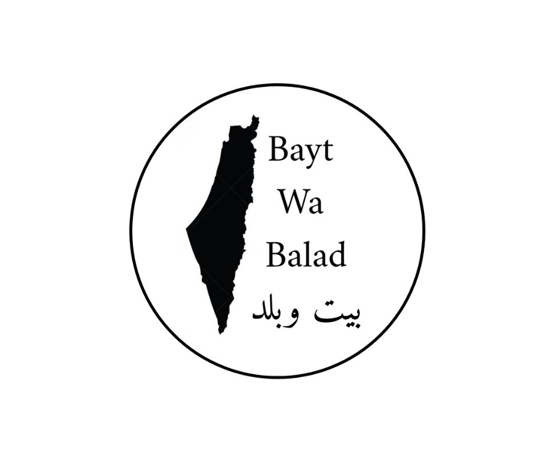
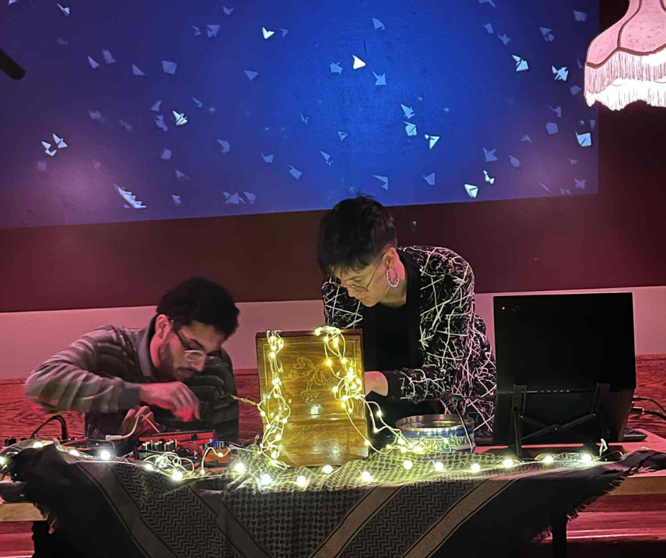
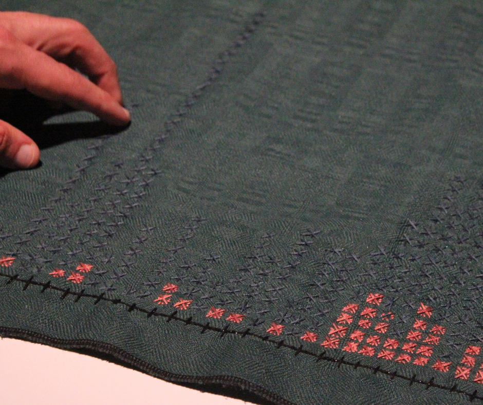
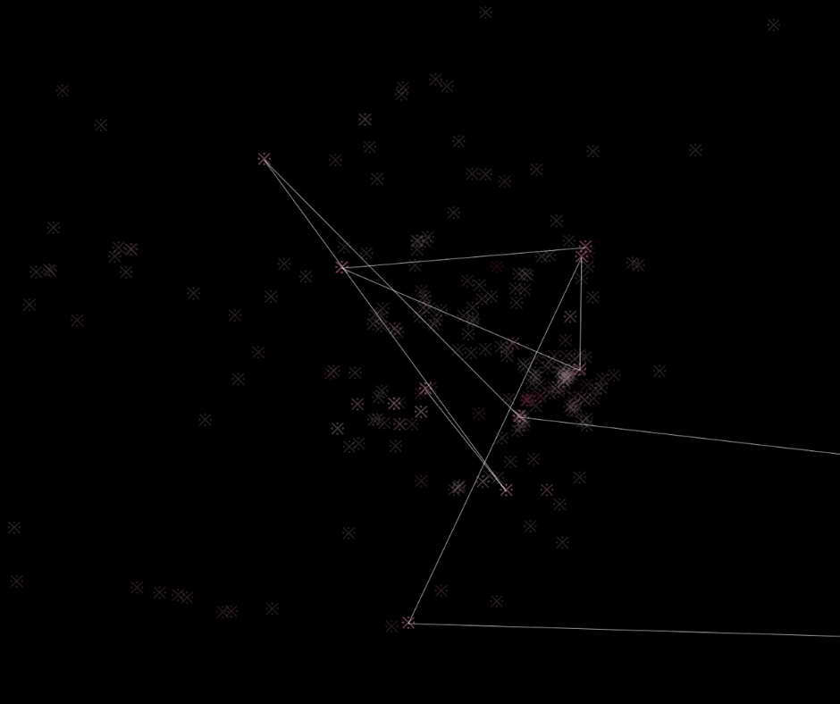
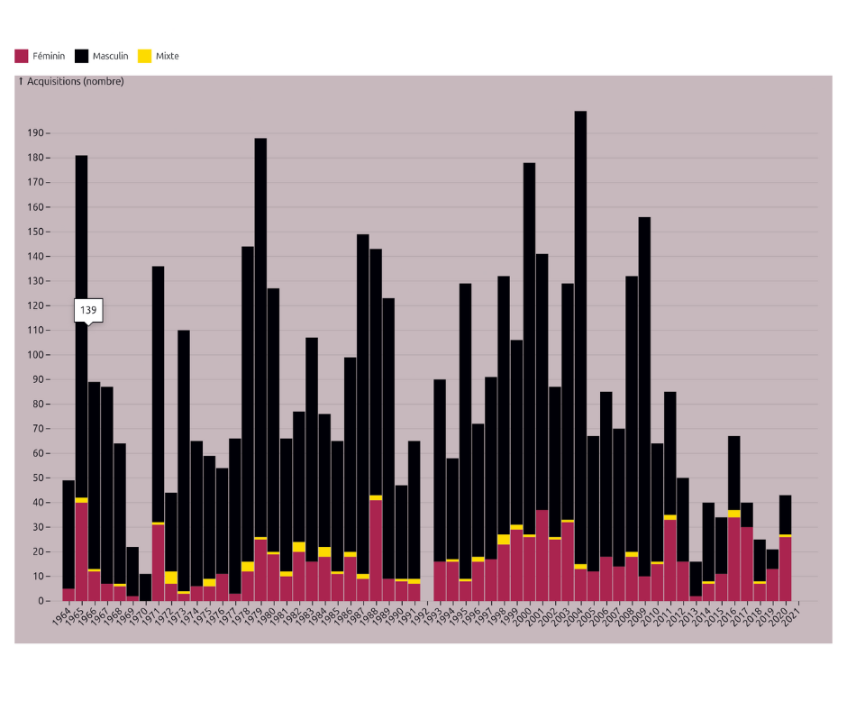
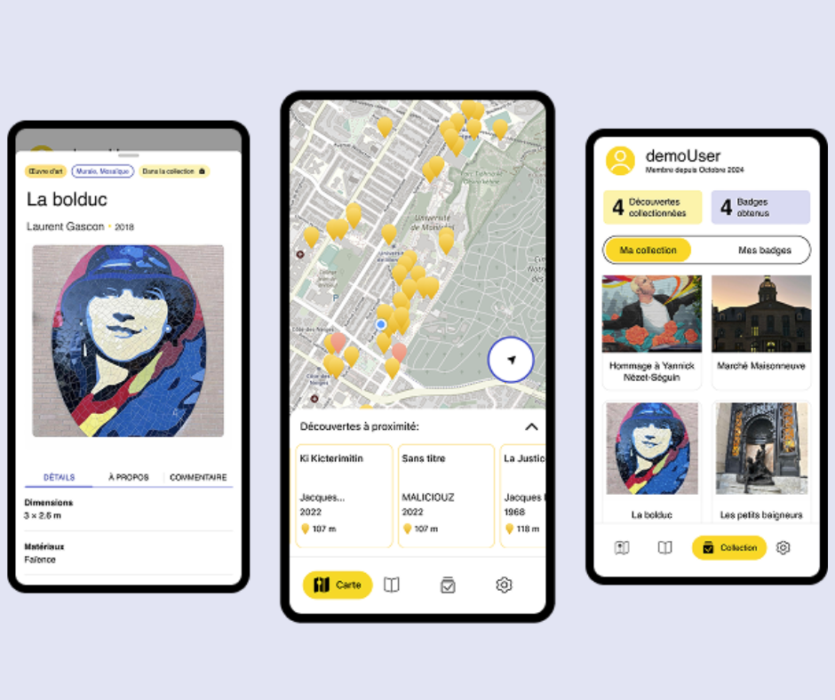
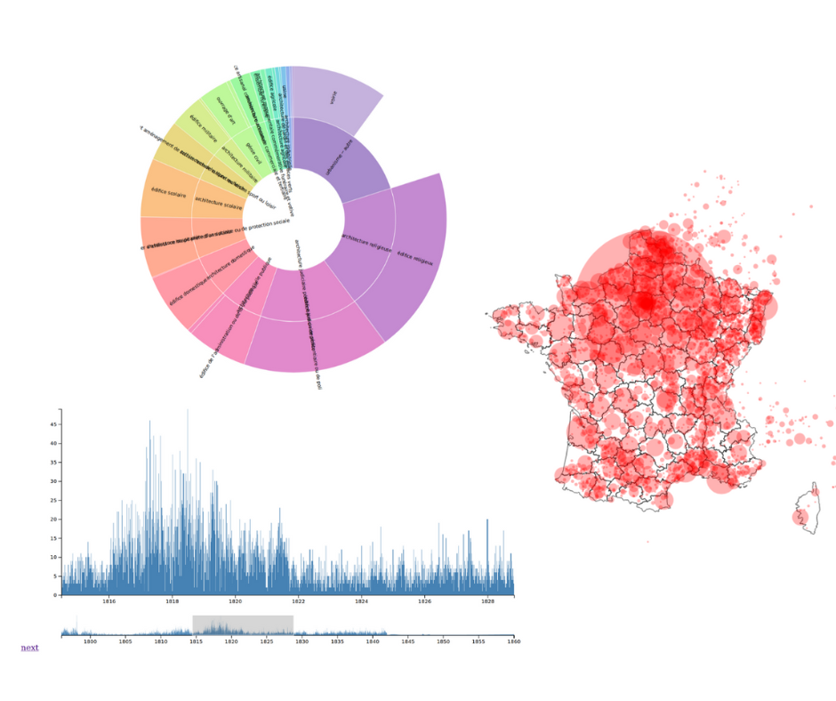

Projets

Bayt wa Balad (upcoming)

Gertraud & the machines
Célébration de données molles
[...] and Counting

Chronologie brodée d'art public

Figures historiques

Femmes artistes au MAC

Application mobile MONA

Atlas numérique de l'architecture publique
Mise à jour avec description détaillée des projets à venir.